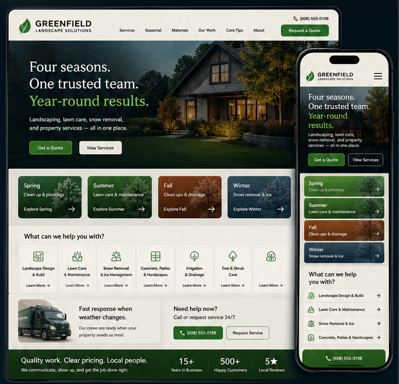
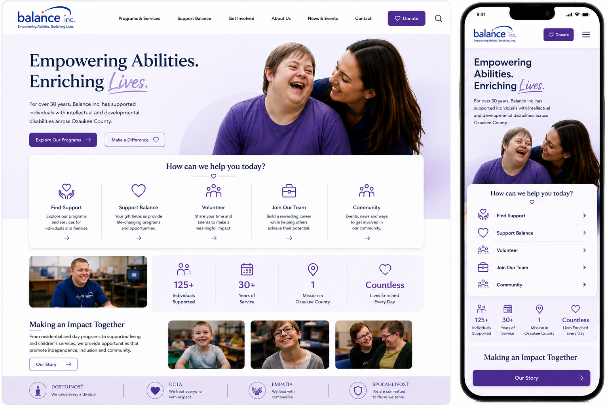

Service Discovery
Make the range of care understandable at a glance.
 ROUTALK
BUILD
ROUTALK
BUILD
SELECTED CONCEPTS
These are independent design explorations, not commissioned client projects. The purpose is to show the thinking behind the direction, not to present them as completed work.
01 · VETERINARY / ANIMAL CARE
The opportunity was not simply to modernize the appearance. I wanted pet owners to understand the practice quickly, recognize the range of care available and find useful actions without searching.
The direction preserves the familiarity of an established local practice while strengthening service discovery, appointment paths, client tools and the mobile experience.
Make the range of care understandable at a glance.
Bring appointments and common client actions closer to the surface.
Carry the same priorities into a cleaner phone experience.

02 · LANDSCAPING / SEASONAL SERVICES
Landscaping businesses can behave like several businesses across the year. The idea here was to make seasonal change part of the experience instead of hiding everything inside one long service list.
The direction connects landscaping, lawn care, snow removal, quote requests and seasonal hiring around the actions customers and applicants actually need to take.
Help customers immediately understand what is relevant right now.
Shorten the path from interest to requesting work.
Give seasonal applicants a structured online path instead of paper forms.

03 · NONPROFIT / COMMUNITY IMPACT
A nonprofit experience needs to communicate more than programs. Visitors should understand why the mission matters, who it helps and where they personally fit into the story.
This direction uses people, impact and participation as the center of the experience, then connects visitors with programs, donations, volunteering and other ways to become involved.
Make the purpose and people behind the organization immediately visible.
Create clear paths for support, donations, volunteering and involvement.
Show what the organization's work actually makes possible.

THE THINKING COMES FIRST
Veterinary care needs trust and clear care paths. Landscaping needs seasonal clarity and fast customer actions. Nonprofit work needs mission, impact and meaningful participation. The solution should change when the problem changes.